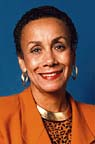
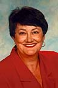

The Alameda County Board of Education encourages two-way communication between the Board and the vast community it serves. Members of the public are encouraged to become involved in the educational process, not only at the local school level, but at the district and county levels as well.
BOARD ORGANIZATION
The Alameda County Board of Education consists of seven members, each elected from a different area of the county. Board members are elected for four-year terms and must be registered voters in their respective areas.
A president, first vice-president and second vice-president are elected by the Board at its annual organizational meeting in July. A quorum of four members is required to conduct official business.
OBJECTIVES
The County Board of Education is committed to providing the leadership necessary to meet the multicultural educational needs of a diverse student population and to increase student success.
BOARD MEETING TIME AND PLACE
Regular meetings of the Board are held at 7:30 p.m. on the 2nd and 4th Tuesdays of each month in the Board Room of the Alameda County Office of Education, 313 W. Winton Avenue, Hayward. Any exceptions to the regular schedule are announced through the local news media.
BOARD MEETING PROCEDURES
All Board actions authorized or required by state law must take place in open session to give the public an opportunity to be heard. Board members are to receive agendas and related materials in advance of each meeting, allowing time for preparation. Agendas and other board materials are available to the public at the meeting. Agendas must be posted at the County Office building 72 hours before the meeting.
The Board may meet in closed session to discuss personnel matters, negotiations or other legally restricted matters. However, any action resulting from discussion in the closed session must be announced in the open session. Meetings are governed by Robert’s Rules of Order.
Printed material for the Board’s review should be sent to the County Office of Education by the Tuesday preceding the meeting. The material will be forwarded to the Board with other agenda material.
|
BOARD RESPONSIBILITIES
In accordance with the California Education Code and other regulations and laws, the Alameda County Board of Education serves as the governing board for the schools and student services/programs operated by the County Superintendent of Schools (Juvenile Court/Community Schools, Infant Program and School Age Mothers Program). The Board also:
- Approves policies, regulations and curriculum for the schools and educational programs operated by the County Superintendent of Schools.
- Adopts rules and regulations governing the Office of the County Superintendent of Schools.
- Approves the annual budget of the County Superintendent of Schools and sets the Superintendent’s salary.
- Receives the annual audit
- Maintains an awareness of financial conditions and operations of school districts in the county.
- Approves the purchase or lease of property for County Office programs.
- Acts as the County Committee on School District Organization which reviews changes in school district boundaries and trustee areas.
- Serves as an appeal board for the adjudication of expulsion appeals, interdistrict attendance appeals, and Charter Schools.
- Advocates on behalf of education on the local, county, state and national level
- Informs local communities about the programs and achievements of the County Office of Education.
|
BOARD MEMBERS
ERNEST AVELLAR
Trustee, Area 2
Southern portion of Alameda and western portions of Hayward, San Leandro, San Lorenzo, Union City, Newark and Fremont
Retired, Former Educator
Elected 1996
Term expires June 2000
Ernest Avellar retired from the Hayward Unified School District in 1991 after 32 years as a teacher of French, Latin, and English. Prior to that, he taught in various private schools. He graduated from the University of Dayton with a B.A. in education and holds a California Life Credential (grades 7-14), an administrative credential, and an M.A. in French literature from California State University, Hayward. He has done post-graduate work at the University of Fribourg in the French-speaking part of Switzerland and Princeton University. Mr. Avellar was active in the California Teacher’s Association as a local president and negotiator and a member of the Association’s Ethics Commission and State Council. He was a volunteer member and Chair of the Supervisory Committee of the Provident Central Credit Union and was appointed by the Hayward City Council to the Santa Clara Neighborhood Task Force.
|
CARMEN CARRILLO, Ph.D., J.D.
Trustee, Area 3
Northern and Central portions of Oakland
Mediator, Consultant
Appointed 1983/Elected 1984
Term expires June 2000
DR. CARMEN CARRILLO is a partner in Mediation, Education and Consultation in Latin America (MECLA) and a consultant to the Center for Health Policy Development based in Texas, the State of Nevada Department of Mental Health, and other private and public entities in the southwest. She has served as a director on the California County Boards of Education (CCBE) and as an elected member of the Delegate Assembly of the California School Boards Association (CSBA). She is President of the California Latino School Board Members Association (CLSBMA) and a member of the CCBE Legislative Committee. Dr. Carrillo represents Oakland on the Alameda County Office of Education, has thrice served as board President and has chaired the Budget, Policy and International Studies committees. She is chair of the State Department of Alcohol and Drug Abuse Latino Constituent Committee and a member of the congressionally-chartered Office of Substance Abuse Prevention High-Risk Youth Committee. Her community activities have included service as a director of the Alameda County Mental Health Association, the East Bay Community Recovery Project, and the California Women’s Commission on Alcoholism and Drug Dependencies. She has earned doctorates in psychology and law and is the recipient of numerous awards.
|
GAY PLAIR COBB
Trustee, Area 6
Western, eastern, and northern portions of Oakland, and northern portion of Alameda
Chief Executive Officer
Elected 1982
Term expires June 2000
GAY PLAIR COBB is Chief Executive Officer for the Oakland Private Industry Council. Prior to her current position. she served as Western Regional Administrator for the Women’s Bureau, U.S. Department of Labor, and also served with the Women’s Bureau in Atlanta and Washington, D.C. Ms. Cobb has been a member of the Alameda County Board of Education since 1981 and has twice served as Board President. She also serves on the Alameda County Economic Development Advisory Board and is on the Boards of the National Association of Workforce Development Professionals, the Minority Employment and Training Association, and the Mayor’s Center for Youth Employment. She is the past Board President of the Black Adoption and Placement Research Center, and was a participant in the 1990 class of Leadership America. She is a native of New York City, graduated from Queens College, and received a MSW degree from the University of California, Berkeley.
|
CHARLES DEADRICH, J.D.
Trustee, Area 4
Central and eastern portions of San Leandro, San Lorenzo, Hayward, and Union City
Attorney
Elected 1974
Term expires June 2002
DR. CHARLES DEADRICH is an attorney and has had an active law practice in the San Leandro-Hayward area since 1955. He graduated from Hayward High School, attended the University of Southern California, San Jose State College, and received his law degree from San Francisco Law School. Dr. Deadrich has been a member of the Alameda County Board of Education since 1974, serving as its president three times. He is a member of the State Bar of California, Alameda County Bar Association, American Legion Post No. 117, and San Leandro Breakfast Club. He is past president of the Hayward Union High School Board of Education and past Director of the Alameda County School Boards Association. His community service activities include Scoutmaster, Boy Scouts of America, director of the Hayward Boys’ Club, and director and treasurer of the San Leandro Chamber of Commerce.
|
FELIX ELIZALDE
Trustee, Area 7
Castro Valley, Dublin, Pleasanton, Sunol, Livermore, and eastern portion of Hayward
Educator, Journalist, and Community Activist
Elected 1990
Term expires June 2002
FELIX ELIZALDE is a veteran educator with more than 25 years of service as a teacher at the high school, community college, and state university levels. He also has many years of experience in educational policy setting and administration. Mr. Elizalde has received numerous rewards for volunteerism and community service and is a recipient of the San Francisco Foundation’s prestigious Robert C. Kirkwood Award for community service and inspired leadership. Until his election to the Alameda County Board of Education in 1990, he served on the County Office Personnel Commission for seven years and was its chairman in 1989-90. He has also been a member of the Executive Board of the Alameda County School Boards Association, the Planning Committee for the CSBA State Conference and Director of the Central Coast Region of the Hispanic Caucus of the California School Boards Association. Mr. Elizalde is Donor Advisor and President of La Raza Media Education Fund of the San Francisco Foundation and a board member of the Alameda County Library Foundation and the Hispanic Community Affairs Council.
|
GAIL JONES SANCHEZ, MSW
Trustee, Area 5
Eastern portions of Fremont, Newark, Hayward, and Union City
Clinical Social Worker
Elected 1996
Term expires June 2000
Gail Jones Sanchez is a licensed clinical social worker who has an active psychotherapy practice in Milpitas. She has taught for the School of Social Work at San Jose State University, Foothill College Continuing Education, UC Santa Cruz Continuing Education, Milpitas Adult Education, and has given extensive lectures and workshops for businesses, service organizations, parent groups, and conferences.
Ms. Sanchez has served as Region B Director of the California Chapter of the National Association of Social Workers and is presently serving on their California State Continuing Education Committee. Ms. Sanchez was President of the Board of North Valley Players and produced and hosted her own public access television show for TCI Cable in Fremont. She won several awards for shows she produced on prevention of disease, alcoholism, and drug use. She has also authored two children’s books, one of which earned a “Children’s Book of the Year” award from the Child’s Study, Children’s Book Committee in New York.
|
JEROME WIGGINS
Trustee, Area 1
Albany, Berkeley, Emeryville, Piedmont, and a portion of northern Oakland
Transportation Representative
Appointed 1992/Elected 1994
Term expires June 2002
JEROME WIGGINS was appointed to the Alameda County Board of Education in April 1992 to fill a vacated seat and was elected to the office in 1994. He recently completed a term as President of the California County Boards of Education, where he represented that group on the Board of Directors of the California School Boards Association. Mr. Wiggins also serves on the Executive Board of the Alameda County School Boards Association, where he represents the Association on the Board of Managers of the North Coast Section of the California Interscholastic Federation. He is a Transportation Representative with the U.S. Department of Transportation in San Francisco and was previously with the Metropolitan Transportation Commission in Oakland as a Planner/Analyst. His community service includes membership on the Berkeley Unified School District Budget Review Committee and Facilities Advisory Committee. He is a past Board member of A.C. Transit and was chair of the City of Berkeley Budget Review Committee and Transportation Commission. He received his B.A. in Urban and Regional Planning from the University of Illinois and his M.A. in City and Regional Planning from U.C. Berkeley.
|
|